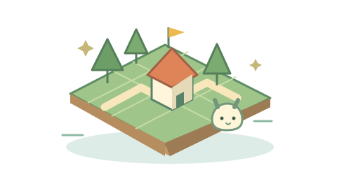

PICK UP 別リポジトリ連携

小さな島で、大きな冒険。
開拓の島 モフルジム
公開中の本編へ。更新はモフルジム側からそのまま届きます。
A LITTLE COLLECTION OF PLAY
ひとりでじっくり、みんなでわいわい。
気になるゲームを、棚からどうぞ。
インストール不要・ブラウザですぐ遊べる

小さな島で、大きな冒険。
公開中の本編へ。更新はモフルジム側からそのまま届きます。
THE COLLECTION
別のキーワードやジャンルで探してみてください。